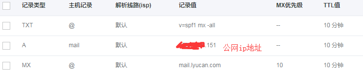

postfix搭建邮件服务器
添加下面三条解析记录

安装postfix
[root@lyucan ~]# yum -y install postfix
[root@lyucan ~]# rpm -qa | grep postfix
postfix-2.10.1-6.el7.x86_64
修改postfix配置文件
[root@lyucan ~]# cat -b /etc/postfix/main.cf | grep -v '#' | grep -v ^$
29 queue_directory = /var/spool/postfix
33 command_directory = /usr/sbin
38 daemon_directory = /usr/libexec/postfix
43 data_directory = /var/lib/postfix
53 mail_owner = postfix
69 myhostname = mail.lyucan.com ##主机名
76 mydomain = lyucan.com ##域名
92 myorigin = $mydomain ##设置为域名
107 inet_interfaces = all ##定义网络区域
109 inet_protocols = all ##定义协议
156 mydestination = $myhostname, localhost.$mydomain, localhost, $mydomain ##定义可接受主机名或域名列表
208 unknown_local_recipient_reject_code = 550
251 mynetworks = 127.0.0.0/8 ##允许哪些机器使用这台机器进行发送邮件，定义为本地，避免转发垃圾邮件
361 alias_maps = hash:/etc/aliases
371 alias_database = hash:/etc/aliases
392
499
559 debug_peer_level = 2
575 debugger_command =
576 PATH=/bin:/usr/bin:/usr/local/bin:/usr/X11R6/bin
577 ddd $daemon_directory/$process_name $process_id & sleep 5
603 sendmail_path = /usr/sbin/sendmail.postfix
607 newaliases_path = /usr/bin/newaliases.postfix
611 mailq_path = /usr/bin/mailq.postfix
616 setgid_group = postdrop
619 html_directory = no
622 manpage_directory = /usr/share/man
626 sample_directory = /usr/share/doc/postfix-2.10.1/samples
629 readme_directory = /usr/share/doc/postfix-2.10.1/README_FILES
开启防火墙
[root@lyucan ~]# firewall-cmd --permanent --add-service=smtp
success
[root@lyucan ~]# firewall-cmd --reload
success
启动postfix
[root@lyucan ~]# systemctl enable postfix.service
ln -s '/usr/lib/systemd/system/postfix.service' '/etc/systemd/system/multi-user.target.wants/postfix.service'
[root@lyucan ~]# systemctl restart postfix.service
[root@lyucan ~]# netstat -tlunp | grep 25
tcp 0 0 0.0.0.0:25 0.0.0.0:* LISTEN 7355/master
tcp6 0 0 :::25 :::* LISTEN 7355/master
测试发送邮件
[root@lyucan ~]# yum -y install mailx ##安装mail工具的包
[root@lyucan ~]# rpm -qa | grep mailx
mailx-12.5-16.el7.x86_64
[root@lyucan ~]# mail -s test 289211569@qq.com
Hello,this is for test!
.
EOT
[root@lyucan ~]# mailq
Mail queue is empty ##为空表示邮件已经发出
查看邮件

看到是以root发送的，因为如果想要以别的用户发送，需要创建相应用户，以admin用户为例
[root@lyucan ~]# useradd admin
[root@lyucan ~]# passwd admin
Changing password for user admin.
New password:
Retype new password:
passwd: all authentication tokens updated successfully.
[root@lyucan ~]# su - admin
Last failed login: Fri Apr 13 18:46:55 CST 2018 from 170.254.70.244 on ssh:notty
There were 658 failed login attempts since the last successful login.
[admin@lyucan ~]$ mail -s test 289211569@qq.com
test for admin
.
EOT
[admin@lyucan ~]$ mailq
-Queue ID- --Size-- ----Arrival Time---- -Sender/Recipient-------
3C4BA35E57* 424 Fri Apr 13 20:24:21 admin@lyucan.com
-- 0 Kbytes in 1 Request.
[admin@lyucan ~]$ mailq
Mail queue is empty
查看收件箱

安装dovecot来使其可以用客户端来收发邮件
[root@lyucan ~]# yum -y install dovecot
[root@lyucan ~]# rpm -qa | grep dovecot
dovecot-2.2.10-8.el7.x86_64
修改dovecot配置文件
[root@lyucan ~]# cat -b /etc/dovecot/dovecot.conf | grep -v '#' | grep -v ^$
19 protocols = imap pop3 lmtp
25 listen = *
72 dict {
75 }
79 !include conf.d/*.conf
82 !include_try local.conf
[root@lyucan ~]# cat -b /etc/dovecot/conf.d/10-auth.conf | grep -v '#' | grep -v ^$
9 disable_plaintext_auth = no ##允许明文登陆
82 auth_mechanisms = plain login
100 !include auth-system.conf.ext
[root@lyucan ~]# vim /etc/dovecot/conf.d/10-ssl.conf
ssl = no
##同时注释掉下面两行配置
#ssl_cert = </etc/pki/dovecot/certs/dovecot.pem
#ssl_key = </etc/pki/dovecot/private/dovecot.pem
[root@lyucan ~]# cat -b /etc/dovecot/conf.d/10-mail.conf | grep -v '#' | grep -v ^$
30 mail_location = mbox:~/mail:INBOX=/var/mail/%u
41 namespace inbox {
56 inbox = yes
70 }
142 first_valid_uid = 1000
242 mbox_write_locks = fcntl
放通防火墙
[root@lyucan ~]# firewall-cmd --permanent --add-port=110/tcp
success
[root@lyucan ~]# firewall-cmd --permanent --add-port=143/tcp
success
[root@lyucan ~]# firewall-cmd --reload
success
启动dovecot
[root@lyucan ~]# systemctl enable dovecot.service
ln -s '/usr/lib/systemd/system/dovecot.service' '/etc/systemd/system/multi-user.target.wants/dovecot.service'
[root@lyucan ~]# systemctl restart dovecot.service
[root@lyucan ~]# netstat -tlunp | grep dovecot
tcp 0 0 0.0.0.0:110 0.0.0.0:* LISTEN 10963/dovecot
tcp 0 0 0.0.0.0:143 0.0.0.0:* LISTEN 10963/dovecot
测试使用dovecot发送邮件
创建admin用户
[root@lyucan ~]# useradd admin
[root@lyucan ~]# passwd admin
Changing password for user admin.
New password:
Retype new password:
passwd: all authentication tokens updated successfully.
admin发送邮件
[root@lyucan ~]# telnet 127.0.0.1 110
Trying 127.0.0.1...
Connected to 127.0.0.1.
Escape character is '^]'.
+OK Dovecot ready.
user admin
+OK
pass echo123.
-ERR [SYS/PERM] Permission denied
Connection closed by foreign host.
出现上面错误，查看maillog日志
[root@lyucan ~]# tail /var/log/maillog
Apr 13 21:53:25 MyCloudServer postfix/anvil[13365]: statistics: max connection count 1 for (smtp:119.123.79.43) at Apr 13 21:49:15
Apr 13 21:53:25 MyCloudServer postfix/anvil[13365]: statistics: max cache size 2 at Apr 13 21:50:04
Apr 13 21:53:29 MyCloudServer dovecot: pop3-login: Login: user=<admin>, method=PLAIN, rip=127.0.0.1, lip=127.0.0.1, mpid=13657, secured, session=<wy5vMrtp1AB/AAAB>
Apr 13 21:53:29 MyCloudServer dovecot: pop3(admin): Error: chown(/home/admin/mail/.imap, group=12(mail)) failed: Operation not permitted (egid=1001(admin), group based on /var/mail/admin - see http://wiki2.dovecot.org/Errors/ChgrpNoPerm)
Apr 13 21:53:29 MyCloudServer dovecot: pop3(admin): Error: Couldn't open INBOX: Permission denied
Apr 13 21:53:29 MyCloudServer dovecot: pop3(admin): Couldn't open INBOX top=0/0, retr=0/0, del=0/0, size=0
Apr 13 21:54:52 MyCloudServer dovecot: pop3-login: Login: user=<admin>, method=PLAIN, rip=127.0.0.1, lip=127.0.0.1, mpid=13709, secured, session=<MOZgN7tp1QB/AAAB>
Apr 13 21:54:52 MyCloudServer dovecot: pop3(admin): Error: chown(/home/admin/mail/.imap, group=12(mail)) failed: Operation not permitted (egid=1001(admin), group based on /var/mail/admin - see http://wiki2.dovecot.org/Errors/ChgrpNoPerm)
Apr 13 21:54:52 MyCloudServer dovecot: pop3(admin): Error: Couldn't open INBOX: Permission denied
Apr 13 21:54:52 MyCloudServer dovecot: pop3(admin): Couldn't open INBOX top=0/0, retr=0/0, del=0/0, size=0
我们需要在家目录下创建存放邮件的目录
[root@lyucan ~]# su - admin
[admin@lyucan ~]$ mkdir -p ~/mail/.imap/INBOX
再次尝试连接
[root@lyucan ~]# telnet 127.0.0.1 110
Trying 127.0.0.1...
Connected to 127.0.0.1.
Escape character is '^]'.
+OK Dovecot ready.
user admin
+OK
pass echo123.
+OK Logged in. ==》 OK
使用foxmail连接

发送一封邮件，提示如下错误

解决方法找了很多，唯一一个能解决的就是把mynetworks = 127.0.0.0/8 设置成0.0.0.0/0，但是这样做的话，所有的机器多可以通过这台服务器进行转发邮件，很不安全，另外一种解决方法就是通过sasl进行认证，个人也推荐使用这种方法。